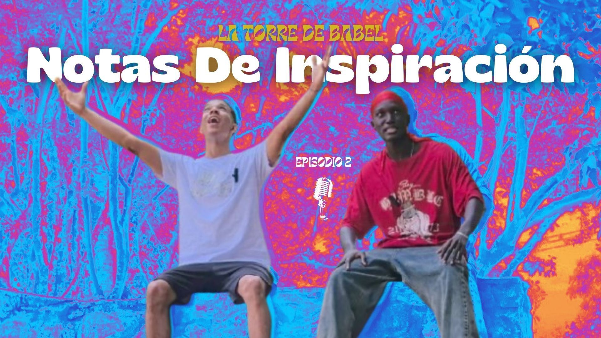
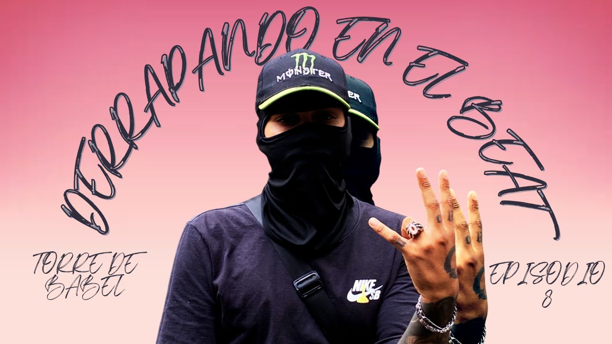

Episodios
En esta seccion podras encontrar todos los episodios de la torre de babel

En este episodio, tengo el placer de presentarles a Juan José, un emprendedor visionario desde muy joven, originario de la vibrante ciudad de Cali, Colombia. Descubre más sobre su historia y experiencia en el emprendimiento.
- 
En este episodio, tengo el placer de presentarles a Dilan, un artista visionario que ha estado haciendo música desde muy joven, originario de la vibrante ciudad de Cali, Colombia. Descubre más sobre su historia y experiencia en la industria musical.

En este episodio, tengo el placer de presentarles a f3nx, La PT y Zhadem unos artistas visionarios que han estado creando música que toca el corazón desde muy jóvenes, originarios de la vibrante ciudad de Cali, Colombia. Descubre más sobre su historia en la música.

Bienvenidos a #ELPARCHEDEBABEL , el podcast donde el conocimiento y experiencias se unen en conversaciones emocionantes. Descubre más sobre su historia en el amor y cómo ha influido en su música.

En este episodio, tengo el placer de presentarles a Juan David, un perfumista visionario que ha estado creando fragancias que cautivan los sentidos desde muy joven, originario de la vibrante ciudad de Cali, Colombia. Descubre más sobre su historia en el mundo de los perfumes y cómo ha logrado crear aromas que inspiran y emocionan.
En este episodio, tengo el honor de presentarles a Edwin Arley Betancourt Arboleda, un emprendedor apasionado del corregimiento de Poblado Campestre, quien ha creado un emprendimiento único de limonadas de naranja. Edwin nos contará cómo empezó su negocio, los retos que ha enfrentado y cómo su visión ha dado vida a este proyecto refrescante y lleno de sabor. ¡No te lo puedes perder!
En este episodio, tenemos el placer de contar con Angel Caicedo, un joven visionario de la vibrante ciudad de Cali, Colombia. Angel Caicedo nos hablará sobre la juventud caleña, los retos y oportunidades que enfrenta, y las formas en las que podemos contribuir para mejorar la vida de nuestros jóvenes. Con su enfoque innovador, nos inspirará a unir esfuerzos para ofrecer más oportunidades y ayudarles a desarrollar su potencial al máximo.

En este episodio, tengo el honor de presentarles a Narziso, un cantante urbano de Cali que está revolucionando el género con su estilo único y su voz inconfundible.
- 
En este episodio, tengo el placer de presentarles a Zukato, un cantante con un sonido único que fusiona el drift norteamericano y el funkypop, creando vibras electrizantes que te transportan a otro nivel.
En este episodio, tengo el placer de presentarles a Sharingan EL 396, un artista que transforma sus vivencias en letras profundas y ritmos impactantes.

En este episodio, tengo el placer de presentarles a Esmeraldboy, un cantante lleno de energía y alegría, conocido por crear canciones para algunos de los youtubers más famosos.